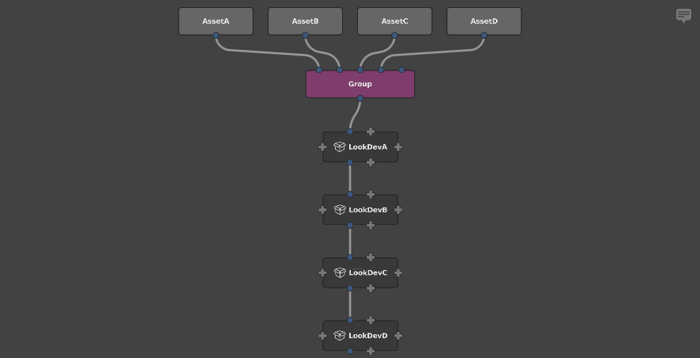
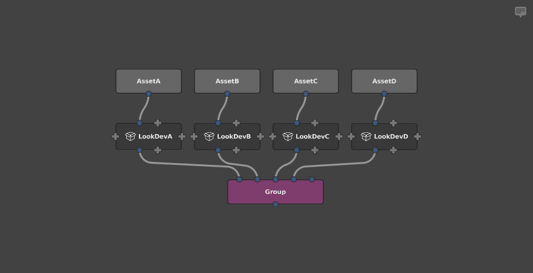
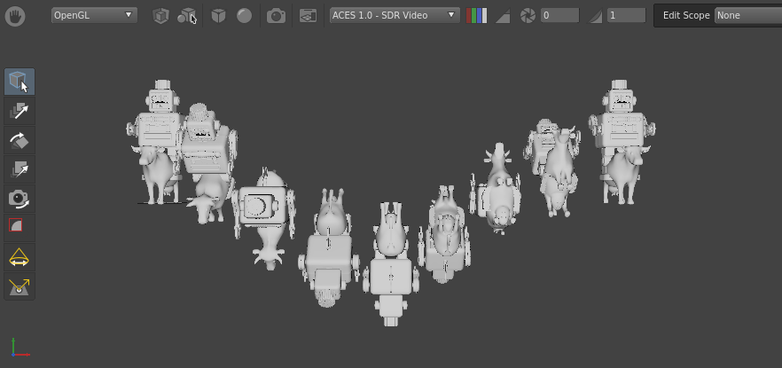

Performance Best Practices
As with most VFX processes and software, a Gaffer node graph is subject to performance considerations. Both its stucture and the expressions and statements that go into it can result in undesirably slow evaluation. Since the cause(s) of a slow graph might not be immediately apparent, developing a basic understanding of how Gaffer evaluates graphs, as well as the complexity pitfalls users commonly encounter, will help you ensure optimum performance.
Here we will discuss the performance implications of various choices you might make in your Gaffer graphs, and provide some guidelines for keeping them running smoothly.
Scene complexity and node graph structure
Gaffer is designed to gracefully handle very large scenes by deferring the generation of each location until requested by the user or the renderer. It is also designed to be flexible, affording the user a great deal of control in how scenes are generated. These two goals can sometimes be at odds.
A very rough estimate for the complexity of a scene can be made by considering the number of its locations, and the number of nodes through which each location passes. For instance, we might say that 10 locations passing through 10 nodes – 10 * 10 = 100 – is roughly equivalent to 20 locations passing through 5 nodes – 20 * 5 = 100. When you consider that most scenes are comprised of a number of assets, each with an associated shader look, you can use this knowledge to structure your node graphs for the best performance.
Consider a scene containing 4 assets, with the geometry cache for each imported into Gaffer through separate SceneReader nodes. Each asset has a lookdev setup from an accompanying Reference node, placed downstream of the SceneReader nodes. This presents us with two options for structuring the node graph. We can either:
Graph1: Group all the assets together, and then apply the lookdev nodes in series.

Graph2: First apply the lookdev nodes, and then group all the resulting scenes together.

For the sake of simplicity, let’s assume that each asset’s scene contains 1000 locations, and each lookdev subgraph contains 100 nodes. Now we can estimate each graph’s performance load.
graph1 = locations * nodes
= (locationsPerModel * numberOfAssets) * (nodesPerLook * numberOfAssets)
= (1000 * 4) * (100 * 4)
= 4000 * 400
= 1600000
graph2 = locations * nodes
= locationsPerModel * numberOfAssets * nodesPerLook
= 1000 * 4 * 1000
= 400000
This results in a performance difference with a factor of 4, just from simple graph restructuring. This difference is tied to the number of assets: if the scene had 100 assets, we would be looking at a performance difference with a factor of 100.
Formally, we can state that grouping second has linear complexity with respect to the number of assets, while grouping first has quadratic complexity. Practically, that means that grouping second is a dramatically better approach, and should be the first consideration when structuring large graphs.
Tip
Apply lookdev to component scenes and assets before combining them into a single scene, and combine them as late as possible in the node graph.
The above guideline applies primarily to applying looks to published assets, and should not discourage you from editing large scenes. Much of Gaffer’s flexibility and power comes from the ability to edit a large scene after it is built, which is invaluable when making edits on a per-shot or per-sequence basis.
Path wildcards
The '...' wildcard in a path expression means “match any number of names.” So, in a large geographical scene, '/world/.../house' would return:
'/world/village/house''/world/country/state/metropolis/neighbourhood/street/house'
This can be very useful, but it comes at a price. Certain operations in Gaffer require the scene hierarchy to be searched for all matches below a particular location. The wildcard '...' tells the expression to go deeper, searching at every level of the hierarchy for any child (or a child of a child of a child) that matches. For large scenes, this becomes very expensive.
Caution
Limit the use of '...' in path expressions.
The most expensive expression possible is '/.../something', because it instructs Gaffer to “search every location of the whole scene.” While this can be necessary at times, it is likely that a more precise wildcard search will provide the same results, with better performance.
For instance, if you know that all the matching results are within a single asset, an expression such as /AssetA/.../something will limit the search to that asset only. Alternatively, if you know that all the matches are at a specific depth, expressions such as /*/something or /*/*/something would yield the same result without needing to visit deeper locations. Small changes such as this can have a significant impact on scene performance, so it is always worth your time to make your expressions as precise as possible.
Note
The '...' wildcard isn’t always costly. For simple nodes such as ShaderAssignment and Attributes, the performance difference is negligible. Those nodes can operate on a single location in isolation, and never need to consider the big picture of the scene as a whole. Generally, only hierarchy-altering nodes such as Prune and Isolate are particularly performance sensitive to the '...' wildcard. In general, it is best to keep wary of '...'.
Expressions
Python is an excellent language, but with its limited multithreading support, it is not the quickest. In contrast, OSL is reasonably quick, and multithreads well. In situations where an expression will be evaluated frequently (such as once per scene location), the equivalent OSL expression can give significantly improved performance over Python. For instance, tests using a per-instance expression of 100,000 instances yielded a 2× speedup in total scene generation time when using one thread, and a 16× speedup when using 12 threads.
Tip
In expressions where performance is a concern, use OSL instead of Python.
However, Python should not be entirely avoided. It can access databases, the filesystem, and the Gaffer and Cortex modules, providing far more flexibility than OSL. Typically, if a Python expression does not access context["scene:path"] or another frequently changing variable, Gaffer’s caching mechanisms will ensure that the expression will be run only once, keeping everything running as smoothly as possible.
Instancing
The Instancer node is capable of generating a very high number of locations, so it too can have a significant performance impact. Because it also supports per-instance variation through the use of expressions on its upstream instance graph, it must evaluate the entire instance graph for every given instance.
Keep in mind the rough complexity metric of complexity = numberOfLocations * numberOfNodes from earlier, and consider these guidelines when using the Instancer node:
Use the Instancer node carefully and with moderation.
Use a minimum of nodes to generate the input for the upstream instance graph that connects to the Instancer node’s in plug. If necessary, consider baking the instance graph to a cache and loading it in with a SceneReader node.
Use a minimum of nodes below the Instancer node to modify the scene containing all the resulting instances.
Group or parent the instances into the main scene as late as possible in the node graph.
Try and assign shaders and set attributes at a location in the scene hierarchy above all the instances, rather than on a per-instance basis.
Performance monitor
Gaffer has a performance monitor and a stats app that can be used to measure and compare the real performance of your graph.
Tip
When performance is critical, use the performance monitor or the stats app.
Contexts
The number of unique Contexts used to compute a graph can increase the memory overhead and compute time it requires. The number of unique Contexts is dependent on the structure of the graph and the use of nodes that add or change Context Variables. As a general rule, the number of Contexts necessary for a particular graph is exponentially proportional to its number of locations or channels, sets, and iterative nodes like Loop or CollectScenes. Hundreds of thousands of Contexts could be needed for a moderately complex graph.
The main performance pitfall you want to avoid is leakage, which is when nodes compute upstream plugs with unnecessarily varying Contexts.
An example case of Context leakage would be a network that iterates on a scene:
{kind=link}
If we look at the graph, we can see that the collect:rootName Context Variable is used to vary the object’s rotations. However, when the network is computed, collect:rootName is passed to the SceneReader, even though it doesn’t use it:
{kind=link}
Despite being unaffected by collect:rootName, the SceneReader node will nonetheless be repeatedly checked in memory to verify that it doesn’t vary with the Context Variable.
The more optimal solution would be to delete the Context Variable with a DeleteContextVariables node above the last node that uses it. We can directly compare the effect this has on the number of Contexts used by running the stats app, by annotating the script with the -contextMonitor and -annotatedScript options:
{kind=link}
{kind=link}
Observe how the SceneReader and Group nodes are queried with around 10 times fewer unique Contexts.
Annotating scripts with performance data
The above graphs with per-node performance annotations were automatically generated by the stats app using the built-in -annotatedScript option. This feature will make a copy of the monitored script and add each node’s performance statistics as graph metadata.
To annotate a script with performance data, use the following command:
gaffer stats <script> -performanceMonitor -annotatedScript <annotatedScript>
For more details on the stats app’s command-line options, see the stats app reference.